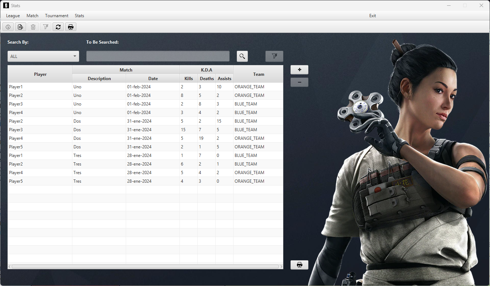

Welcome to the Stats window User Help quide. This document provides essential information on how to use and navigate through the Stats window in our application.
The Stats window is where all the statistics about the players are shown. To get started, follow these steps:
The Stats window is meant to provide an intuitive and user-friendly experience. Here are some tips for navigating through the window and how to use it:
There are multiple ways to add a Stat through the Stats window, one way to make this is by simply
pressing the button highlighted in the image.
By using the highlighted button while having a row selected as in the image you will be able to delete a Stat
and as for the adding acion there are multiple ways to delete a Stat.
In this image you can see the interface that is meant to help the user locate the Stat(s) he wants to see
By using the combo box you will be able to choose by what to filter the Stats, then you can type in the text field
what you are looking for in the Stats finally by just hitting the search button you will be regarded with the Stats
that fulfilled the requirements you asked for.
NOTE: Please note that you can only choose one filter at a time and that you can reset the table by using the clear filters button.
Once the user has the Stats that he wants, he can print them thanks to the highlighted button in this image.